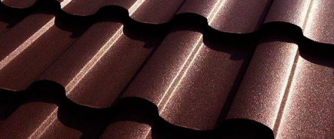

Любители старинных крыш, покрытых черепицей, не пройдут и мимо дома, покрытого современной металлочерепицей. Это прочное и удобное в монтаже покрытие выгодно отличается от керамической черепицы не только своей лёгкостью, но и более низкой стоимостью.
У металлочерепицы много положительных качеств: Долговечность: Качественная металлочерепица может прослужить почти полвека, и всё это время будет выглядеть как новенькая, сохраняя стойкость цвета и коррозийную устойчивость.
Лёгкость: вес каждого листа - 3,6 - 5,5 кг/м2. Благодаря лёгкости этого покрытия, снижается стоимость его доставки до места монтажа, а также стоимость конструкции стропильной системы строения. Лёгкость этого материала упрощает и сам монтаж кровли.
Эстетическая сторона тоже немаловажна: широкий выбор цветов и фактуры даёт возможность выбирать металлочерепицу в соответствии с архитектурой и дизайном здания, начиная от старинных особняков и заканчивая строениями в стиле Модерн.
Удобство в монтаже. Это покрытие настолько удобно в монтаже, что бригаде из двух специалистов за 1 день по силам уложить около 100 м2 металлочерепицы. Более того, ремонтируя старые крыши, вовсе не обязательно демонтировать отслужившую кровлю - прежнее покрытие, такое как плоское железо, рубероид или битумная черепица может быть использовано как дополнительная гидроизоляция. Металлочерепицу широко используют при строительстве коттеджей, многоэтажных зданий, торговых и промышленных помещений. Есть только одно ограничение: угол ската кровли не должен превышать 14 градусов.
Тонкая, но прочная. Для изготовления металлочерепицы используется горячеоцинкованный лист с двусторонним покрытием, состоящим из нескольких слоёв. Прочность зависит от стальной основы, защиту от коррозии создаёт алюминий, а поверхность среза бережёт от повреждений катодная защита, образованная цинком. Качество оцинкованной стали, а также технология нанесения защитного покрова во многом определяют срок службы металлочерепицы.
Слишком тонкий лист быстро проржавеет, как только будет нарушено защитное покрытие. Однако, чересчур толстые листы будут излишне тяжёлыми и создадут нагрузку на стропильную систему, а кроме того монтаж тяжёлых листов будет намного сложнее.
Для изготовления качественной металлочерепицы используется стальной лист, толщиной не менее 0,45 мм и оцинкованный с обеих сторон. Три слоя создают защитное покрытие этого материала: пассивирующий, грунтовка и наружный. Первый слой – пассивирующий, он не даёт веществам, которые содержатся в грунтовке, разрушать цинковое покрытие. Второй слой – грунтовка, она улучшает сцепление защитного наружного слоя с поверхностью листа. Наружный слой – это полимерный материал (полиэстер, пурал и пластизол) либо краска. Благодаря полимерному покрытию металлочерепица выдерживает температуру от 50 градусов мороза, до +120 градусов Цельсия.
Остановимся подробнее на покрытии и профиле металлочерепицы. Именно от покрытия во многом зависит и срок службы всей кровли.
Наиболее оптимальным покрытием считается пурал («Ранила»), он удачно сочетает в себе низкую цену и высокие эксплуатационные характеристики: устойчивость к химическим воздействиям, высоким температурам, солнечному излучению, а также суточным перепадам температуры. Толщина этого покрытия: 50 мкм. В составе пурала содержится пигмент высокого качества, он делает поверхность шелковисто-матовой и придаёт ей блеск, стойкий цвет, пластичность и твёрдость. Благодаря пуралу у поверхности металлочерепицы появляются и грязеотталкивающие свойства. Этот материал легко монтируется и подвергается фальцовке практически без повреждений. Это покрытие выдерживает температуру от -15 до +120 градусов Цельсия. Пурал долго служит благодаря устойчивости к механической и химической коррозии.
Ещё одно распространённое покрытие – полиэстер. Оно подходит практически для любого климатического пояса, поскольку устойчив к высоким температурам и к коррозии. Его толщина составляет как правило 25 мкм, а поверхность может быть как матовой, так и глянцевой. Тёплая матовая поверхность создаёт иллюзию натуральной черепицы.
Толщина полиэфирного покрытия: 35 мкм, оно имеет высокую стойкость к коррозии и сохраняет свои качества при температуре от от -30 до +120 градусов Цельсия. Хорошая цветостойкость происходит благодаря другому коэффициенту преломления солнечных лучей.
Теперь расскажем немного о профиле. Существует очень много различных покрытий, цветов и геометрии профилей. Производители и продавцы часто присваивают каждому профилю какое-нибудь красивое название: «Престиж», «Эффект», «Классик»… Они отличаются друг от друга не только цветом, но и высотой и шириной волны, рисунком и т.д. Форма профиля влияет на технологичность монтажа и на то, как будут видны вертикальные стыки листов на уже готовой кровле.
Монтируется металлочерепица сравнительно быстро и легко при помощи кровельных саморезов, которыми листы металлочерепицы крепятся к обрешётке.
Если сравнить с монтажом натуральной или битумной черепицы, то монтаж металлочерепицы будет значительно дешевле. Это происходит благодаря невысокой стоимости материала и подготовительных работ. Качество монтажа очень важно, поскольку именно от качества монтажа зависит срок службы всей кровли. Вот почему желательно чтобы у фирмы-продавца были собственные кровельные бригады и лицензированная практика монтажа именно металлочерепицы.
Наиболее распространённый способ монтажа – фальцевание: края соседних листов сгибают особым образом и соединяют друг с другом. При этом швы (или как их называют, фальцы) бывают стоячими и лежачими, с двумя загибами и с одним загибом. Стоячими фальцами соединены края металлических полос, которые находятся вдоль ската (можно сказать вертикально), эти швы выступают над всей плоскостью кровли, а лежачими швами – те, которые идут поперёк (то есть горизонтально). Двойной стоячий фальц считается самым влагонепроницаемым и герметичным. Кровлю, сделанную по фальцевой технологии, можно отличить по характерному рисунку, который получается благодаря продольно-поперечным швам.
Как выбирать металлочерепицу? Первым делом следует обратить внимание на профиль, тип покрытия, ассортимент комплектующих, и конечно же на производителя. Металлочерепица известных марок будет стоить дороже на 5-10%, чем материал неизвестной марки. Однако, именно производитель с хорошей репутацией станет отвечать за свою продукцию и гарантировать, что материал качественный а оборудование современное. К примеру ТПК, «Ранила» применяет только металл от лучших мировых производителей и даёт гарантию не менее 10 лет на свою продукцию. У добросовестных производителей окрашена и внутренняя сторона металлочерепицы, ведь и внутренняя сторона может пострадать от коррозии, если при резком понижении температуры на поверхности листа возникнет влага. А что могут гарантировать малоизвестные производители? К сожалению, в большинстве случаев они исчезают с рынка так быстро, что вам уже не к кому будет обратиться, если возникнут проблемы или вопросы к ним.
Не забудьте и про аксессуары. Без них не обойтись. Для законченного кровельного покрытия вам понадобятся: конёк, планка примыкания к стене, торцевая планка, карнизная планка, ендова, снегозадержание и многое другое.
Металлочерепица Алматы
Источник: vashdom.ru